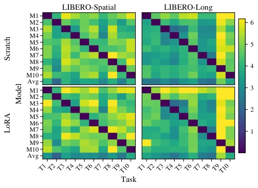
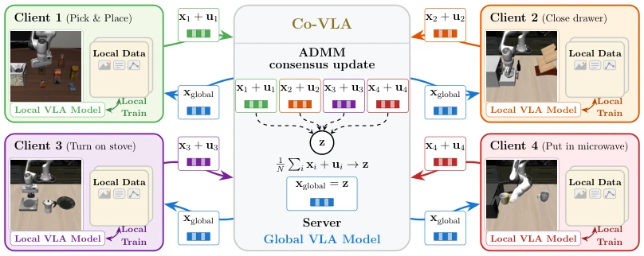
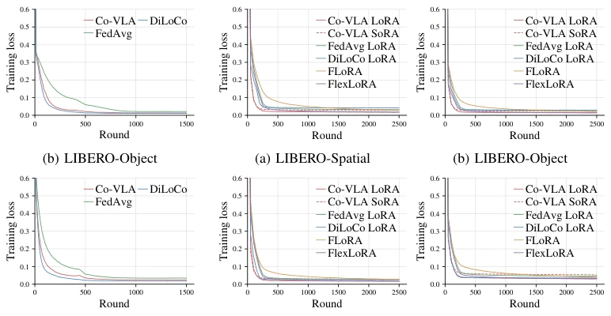
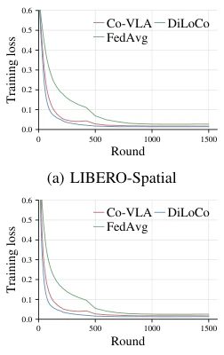

Co-VLA poured a bucket of cold water on the federated learning community, yet also served a bowl of hot soup. It did not employ fancy MoE routing, but rather straightforwardly used ADMM to establish "consensus", forcibly aligning the "discourse" of robot clients with divergent interests. This approach proves particularly effective for LoRA fine-tuning, resolving the chronic issue of traditional FedAvg where clients "train independently, resulting in chaos" under heterogeneous data. However, do not celebrate too soon; the convergence speed of this method remains slower than centralized training, and the authors did not dare to exaggerate the strength of privacy protection—after all, regarding the leakage of data through model parameters, ADMM cannot rescue the situation. Overall, this is a pragmatic solution that is "slow but stable", suitable for robot teams with distributed data who do not wish to be hindered by privacy walls.
Vision-Language-Action (VLA) models have shown promising performance in the robotics domain; however, data collection is costly and distributed across different laboratories, tasks, and locations, making centralized training neither practical nor compliant [1]-[4]. Although federated learning can address data silo issues, when handling non-independent and identically distributed (non-i.i.d.) data, simple parameter averaging (such as FedAvg) causes the model to drift towards local optima of individual clients, severely compromising global performance [9]. Particularly in LoRA fine-tuning scenarios, directly averaging low-rank factors introduces severe bilinear aggregation mismatch problems, leading to performance degradation [10]-[12]. Existing works such as FedVLA rely on specific MoE architectures, lacking generality [15]. Therefore, there is an urgent need for a federated optimization framework capable of both handling heterogeneous data and uniformly adapting to full model training and parameter-efficient fine-tuning (such as LoRA/SoRA).

Fig. 2: Cross-task training loss discrepancies of SmolVLA on LIBERO-Spatial and LIBERO-Long.
The core of Co-VLA lies in modeling federated VLA training as a global consensus optimization problem, utilizing the Alternating Direction Method of Multipliers (ADMM) to replace traditional parameter averaging. The overall process is divided into three steps: 1. Local Update: Each client $i$ optimizes the local model $x_i$ on local data $D_i$; the objective function includes the original loss term and a quadratic regularization term, forcing $x_i$ to converge towards the global consensus variable $z$; 2. Dual Update: Clients calculate the increment of the Lagrange multiplier $u_i$, accumulating the deviation from the global model; 3. Global Aggregation: The server calculates the average of all clients' $x_i + u_i$ as the new global consensus variable $z$ and broadcasts it back to the clients. The innovations lie in: for full model training, directly constraining parameter consistency; for LoRA fine-tuning, applying the consensus constraint directly onto the low-rank factors $A$ and $B$, avoiding aggregation errors where $E[B_i A_i] eq E[B_i]E[A_i]$; for Sparse LoRA (SoRA), incorporating gating parameters $g$ into the consensus variable and inducing sparsity via soft-thresholding operations on the server side to achieve adaptive rank selection. This method is model-agnostic and supports over-relaxation to accelerate convergence.

Fig. 1: Overview of Co-VLA for federated training of vision-language-action models via global consensus.
Experiments were conducted on the LIBERO simulation benchmark and the Open X-Embodiment real-world dataset, with comparative models including SmolVLA and X-VLA. Baselines covered FedAvg, DiLoCo, as well as FLoRA and FlexLoRA for LoRA. Evaluation metrics included task success rate (LIBERO) and action prediction error (real-world). Results indicate: in LIBERO full model training, Co-VLA performance approached centralized training and outperformed FedAvg and DiLoCo; in LoRA fine-tuning, Co-VLA significantly outperformed FLoRA and FlexLoRA, with faster convergence. In real-world experiments, Co-VLA achieved the minimum average error under mixed heterogeneous data sources and the highest success rate in high-difficulty stacking tasks. Ablation studies indicate that the SoRA variant maintains comparable performance with only 55%-60% of the parameter count.

Fig. 4: Loss curves for SmolVLA LoRA fine-tuning across LIBERO task suites.

Fig. 3: Loss curves for SmolVLA training from scratch across LIBERO task suites.